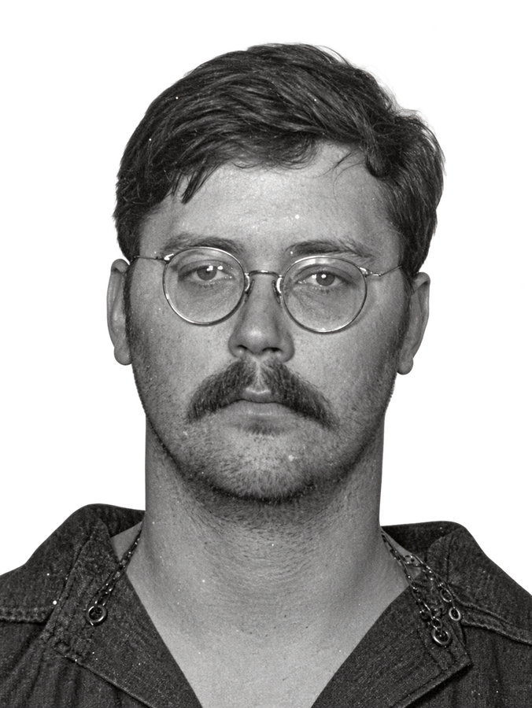

INVESTIGACIÓN CRIMINAL · UV
ARCHIVO
CRIMINOLÓGICO
Cinco expedientes. Una mirada criminológica.
05 EXPEDIENTESUN MISMO MÉTODO: CONTRASTAR
ARCHIVO / SERIE 01DOCUMENTACIÓN


PERFIL / VICTIMOLOGÍA / INVESTIGACIÓN
01 / 02
01 / DENTRO DEL ARCHIVO
Un caso.
Todas las piezas.
Conecta los hechos, la conducta y la investigación.
02 / LOS EXPEDIENTES
Los expedientes.
03 / TU RUTA DE ESTUDIO
Entra en el caso.
Une las piezas.
Explora a tu ritmo.